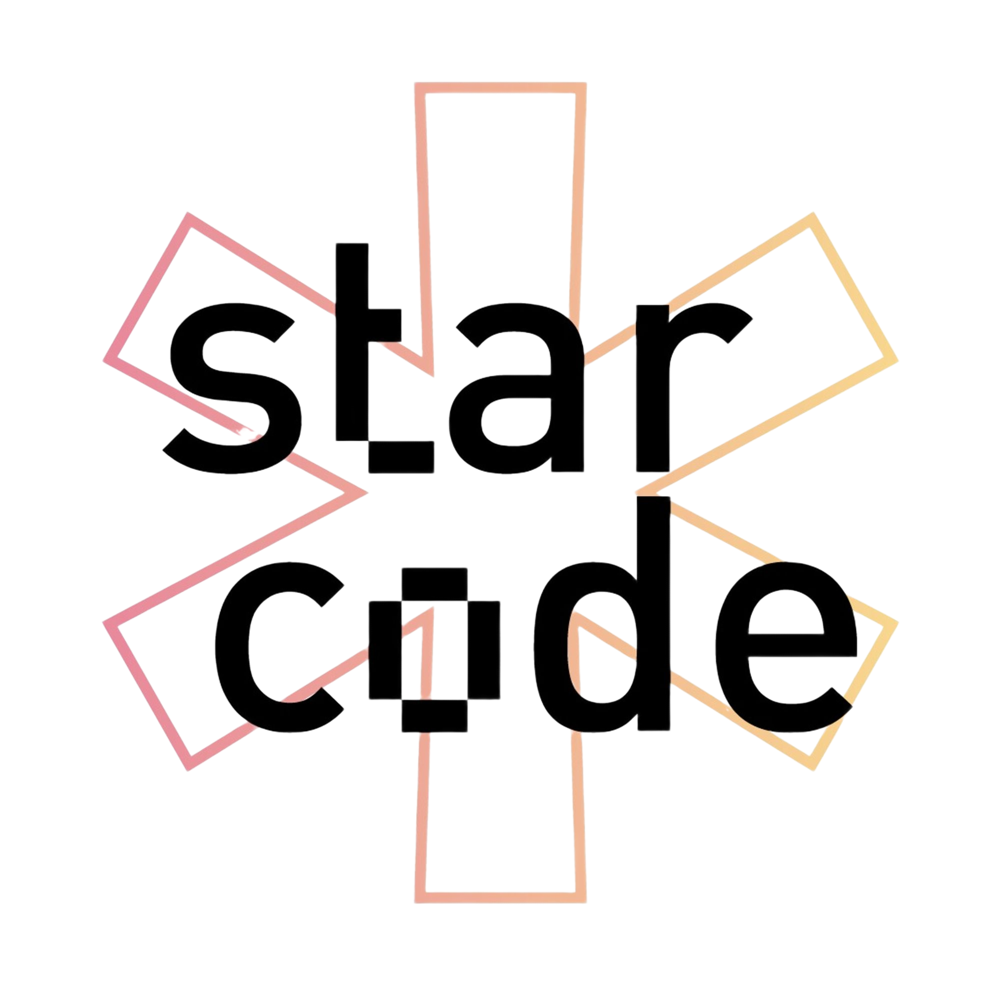
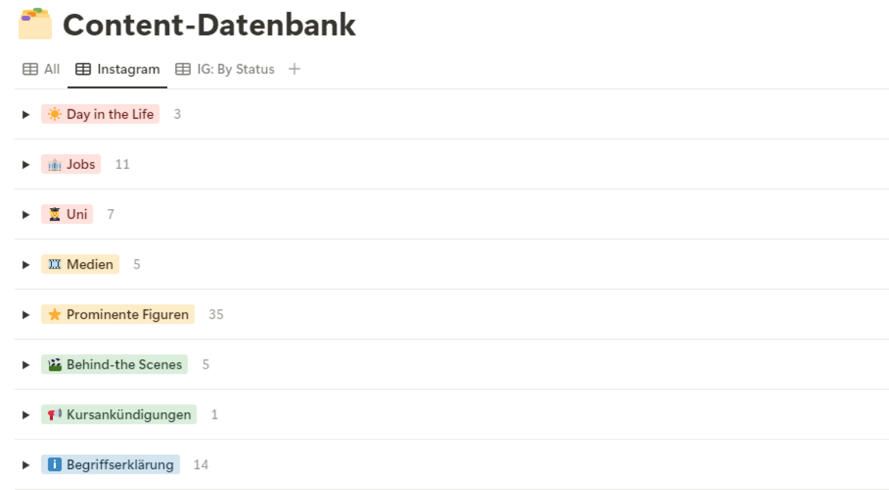
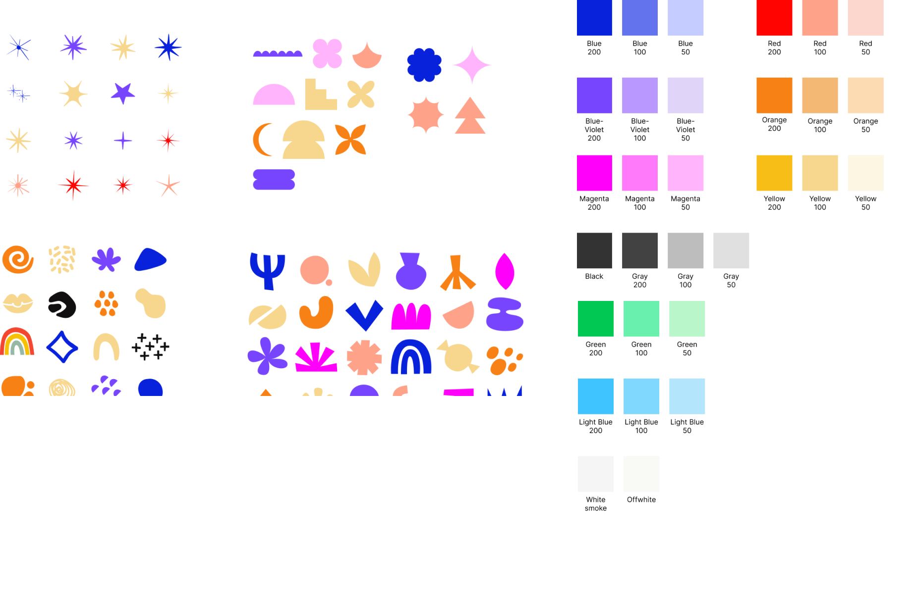

Rebranding of Starcode's Social Media with lots of content
Graphic Design
Social Media
Instagram
Timeline
May 2024 - Present
Sector
Social Media, Content, Graphic Design
Design Role
Design, Content

The Process
Part 1
Team and Responsibilities
As a team of three, we are responsible for the outreach, social media, and graphics for
Starcode, a registered association dedicated to introducing computer science to girls aged 12-16
and some university students.
Part 2
Initial Assessment and Organization
Upon taking over the department in June 2024, our first task was to review, clean up, and
reorganize the existing content database. We identified six main categories, each with 3-4
subcategories, to streamline our future posts.
Part 3
Content Ideation
For each subcategory, we brainstormed and developed 50-150 concrete post ideas. This extensive
database of ideas ensures that we have a substantial backlog ready for when we start posting.

Part 4
Graphics and Color Palette
We also created a graphic database, drawing and designing numerous shapes for future use. Additionally, we decided on a cohesive color palette to maintain consistency across all designs.

Part 5
Template Design
Next, we designed various templates for each subcategory, creating 3-4 different variants. We drew inspiration from diverse media sources to ensure our designs were fresh and engaging.